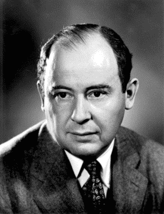

Джон фон Нейман.

Джон фон Нейман (28 декабря 1903 года - 8 февраля 1957 года) – венгеро-американский математик, наиболее известен, как человек создавший архитектуру современного компьютера.
Джон фон Нейман родился в Будапеште, столице Венгрии, 28 декабря 1903 года. Он был старшим сыном у своих родителей — Макса Неймана и Маргарет Канн. С самого раннего возраста Неймана интересовала природа чисел и математическая логика. Математика была не единственным предметом, которым интересовался юный Нейман. Ему также нравилась история, и так, что в возрасте восьми лет он прочёл 40 томов всемирной истории. Это свидетельствовало о том, что Нейман одинаково хорошо себя чувствовал и в логической и в социальной отраслях науки. Нейману также повезло с родителями, которые поддерживали его во всех начинаниях. В 1914 году, в возрасте десяти лет, Нейман поступил в лютеранскую гимназию, которая была одной из трёх лучших на тот момент в Будапеште. Свою первую работу он опубликовал в журнале Немецкого математического сообщества в 1922 году, речь в которой шла о нулях определённых минимальных многочленов. Берлин, Цюрих, Будапешт Хоть Нейман и не имел большого интереса ни к химии, ни к инженерному делу, его отец убедил его заняться инженерией, так как на тот момент это считалось престижным. Нейман учился в Католическом университете Петера Пазманя в Будапеште, где получил докторскую степень по математике, а параллельно заканчивал базовый университетский курс по химическому машиностроению в Швейцарской технической школе Цюриха. В своей докторской работе Нейман занимался постулированием теории множеств, предложенной Кантором. Конечно же это было необычное достижение, что семнадцатилетний парень одновременно учился в одном ВУЗе и писал докторскую работу во втором. Он получил хорошие оценки и по окончанию базового курса химического машиностроения и по докторской работе по математике. Ему было всего двадцать два года. Квантовая механика После получения сразу двух степеней, в 1926 году Нейман начал посещать Гёттингенский университет в Германии, в котором он занимался квантовой механикой. Он был творческим и оригинальным в своём мышлении, предлагал полные и логические концепции. В том же 1926 году он занимался теориями квантовой механики с целью их упорядочивания и улучшения. Нейман пытался найти сходные черты у волновой и матричной механик. Он также работал над правилами абстрактного пространства Гильберта и разработал математическую структуру с точки зрения квантовой теории. Личная жизнь В течение 1927-1929 годов, после представления теории квантовой механики, Нейман посещал многочисленные конференции и коллоквиумы. К 1929 году он написал около 32 работ на английском языке. Эти работы были хорошо структуризированны для того, чтобы другие математики могли включать работы Неймана в свои теории. К этому времени он стал знаменитостью в академических кругах благодаря своим творческим и инновационным теориям. К концу 1929 года Нейману предложили место преподавателя в Принстонском университете. В это же время он женился на Мариэтте Кёвеши, подруге детства. В 1935 году у них родилась дочь, которую назвали Мариной. Брак Джона и Мариэтты распался в 1936 году. Мариэтта вернулась назад в Будапешт, а Нейман некоторое время путешествовал по Европе, а затем вернулся в США. Во время поездки в Будапешт он познакомился с Кларой Дэн, на которой женился в 1938 году. Смерть Джону фон Нейману был поставлен диагноз рак, но несмотря на это он принимал участие в церемониях награждения, организованных в его честь, находясь в сидячей каталке. Он поддерживал тесные связи с семьёй и друзьями во время своей болезни. Скончался Джон фон Нейман 8 февраля 1957 года. Весомый вклад Нейман принимал участие в одном из правительственных проектов в Лос-Аламосе («Манхэттенский проект»), в котором работал над созданием схемы и рабочего прототипа взрывной линзы. Математическое моделирование, используемое им во время этих работ, способствовало разработке современных компьютеров. Помимо работы с этими моделями, он также финансировал проект, который занимался созданием компьютера. Он также принимал участие в разработке архитектуры компьютера, а его усилия со временем убедили других учёных, что компьютер это не только «большой калькулятор». Квантовая логика, теория деловых игр, линейное программирование и математическая статистика всего лишь часть того, что он «подарил» науке. Награды и достижения Докладчик на коллоквиуме Американского математического общества (АМО),1937 Обладатель премии имени Бохера от АМО, 1938 Докладчик на лекциях имени Гиббса от АМО, 1944 Премия Энрико Ферми, 1956 Докладчик на международном конгрессе, 1950 Почётный член Лондонского математического общества, 1952 Президент Американского математического общества, 1951-1952 Докладчик на международном конгрессе, 1954